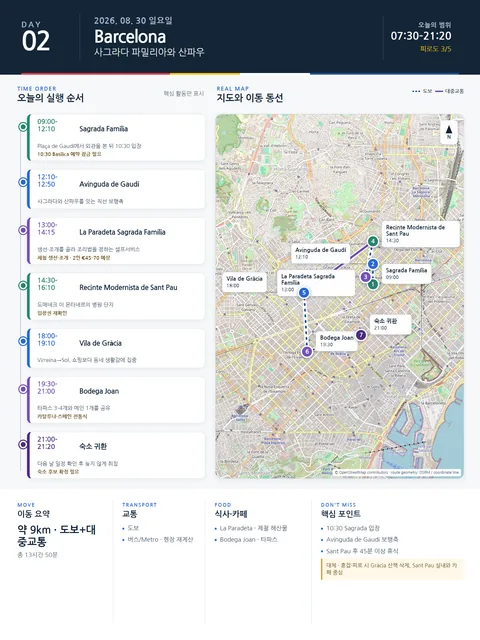

Day 2 · 8/30 일 · Barcelona

오늘의 주요 장소


- 핵심 실행
- Sagrada Família 10:30
- 권장 출발
- 09:30 숙소 출발 권장
- 완충
- 입장 30분 전 도착
시간표
| 시간 | 일정 | 실행 포인트 |
|---|---|---|
| 07:30–09:00 | 숙소 아침·느린 준비 | 샐러드, 과일, 빵, 커피. 도착 다음 날이므로 정식 운동은 하지 않는다. |
| 09:00–09:45 | 사그라다 주변으로 이동·외관 관찰 | Plaça de Gaudí 연못 쪽에서 동쪽 파사드와 전체 높이를 먼저 본다. 소지품은 몸 앞쪽에 둔다. |
| 10:30–12:10 | 사그라다 파밀리아 입장 | 일요일 공식 개장 10:30. Basilica €26를 기본안으로 예약한다. 타워는 장기여행 첫날의 피로와 계단 하산을 고려해 선택 사항이다. |
| 12:10–12:50 | Avinguda de Gaudí 산책 | 사그라다에서 산파우로 이어지는 직선축. 도시가 기념건축을 일상생활과 연결하는 방식을 관찰한다. |
| 13:00–14:15 | La Paradeta Sagrada Família 점심 | 생선·조개를 무게로 골라 조리법을 정하는 셀프서비스. 일요일 13:00–16:00, 예약 없이 줄 서는 방식. 2인 €45–70 예상. |
| 14:30–16:10 | Recinte Modernista de Sant Pau | 도메네크 이 몬타네르의 병원 단지. 사그라다와 공동 특별전도 확인한다. |
| 16:10–17:20 | 카페·숙소 휴식 | Three Marks Coffee 또는 숙소 복귀. 45분 이상 앉아 쉬는 시간을 확보한다. |
| 18:00–19:10 | Gràcia 저녁 산책 | Plaça de la Virreina → Plaça del Sol → Vila de Gràcia 골목. 쇼핑보다 동네 생활감에 집중한다. |
| 19:30–21:00 | Bodega Joan 저녁 | 카탈루냐·스페인 전통식. 예약 권장. 과식하지 않도록 타파스 3–4개와 메인 1개를 공유한다. |
피로도
3/5
이 날의 장소
일자별 시간표와 본문 표기에서 찾은 것이다. 하루의 전부가 아니라 장소 카드가 있는 것만 담는다.
이 날의 메모
사그라다 파밀리아와 산파우 — 돌, 빛, 도시개혁
유료 핵심 관광지는 2곳뿐이지만 사그라다의 밀도와 더위 때문에 오후 휴식이 필요하다.
권장 선택: 사그라다에서는 타워보다 내부 공간과 빛, 파사드의 이야기, 박물관을 충분히 보는 편이 Jason·Julia의 여행 성격에 더 적합하다.
상세 실행 확인
- 최고 리스크
- 시간지정 입장·주말 혼잡
- 우선 삭제
- Gràcia 저녁 산책
- 대체안
- Sant Pau 실내 또는 카페 중심
- 식사·휴식
- Sant Pau 전후 가벼운 점심
- 잠금 필요
- Sagrada·Sant Pau
Google 실행지도
사그라다 파밀리아와 산파우 — 돌, 빛, 도시개혁
지도 펼치기
지도는 펼칠 때만 불러옵니다.
Daily Action Map

실제 좌표와 OpenStreetMap을 사용한 실행용 요약입니다. 도로·대중교통 상황은 출발 직전에 다시 확인하세요.